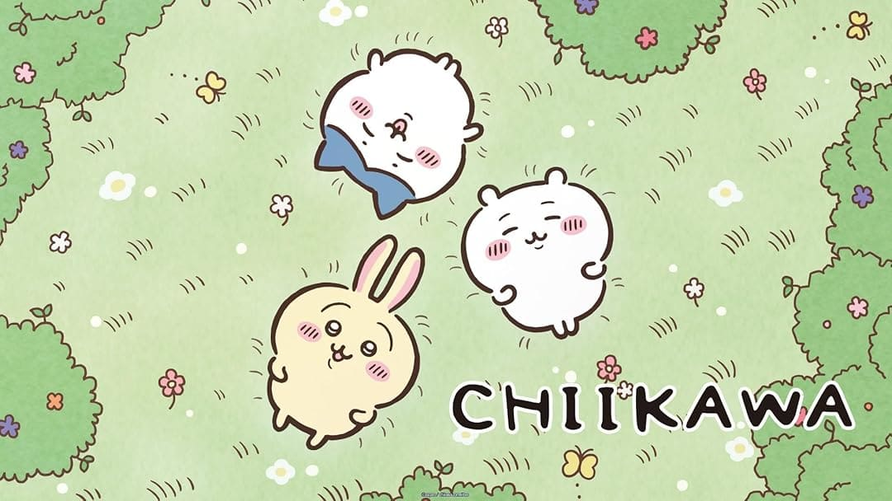
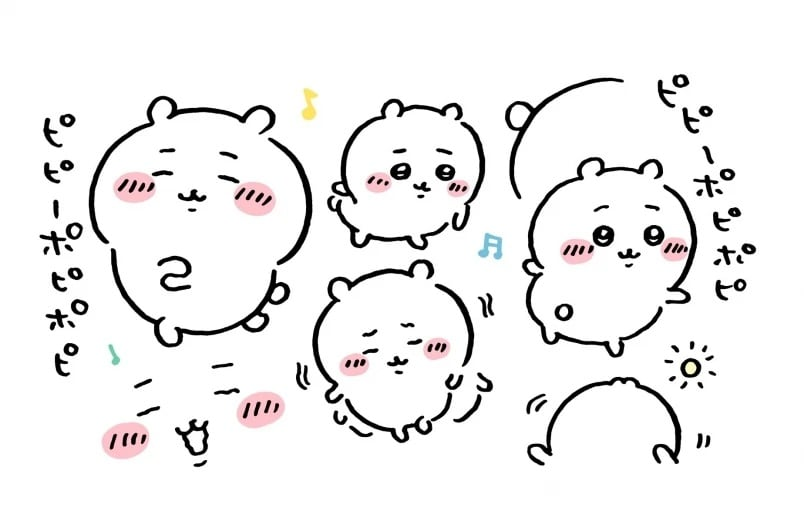

By using the srcset element we can use a method called resolution switching, the browser is able to make the decision based on the information presented to it within our srcset and sizes attribute to select the most fitting img linked within it to display to the viewport dependent on size. Resolution swapping is having multiple different pictures at different resolutions depending on viewport sizes and the browser will choose one of those resolutions that best fit the task based on the information it's been provided.

Using the picture element we are able to follow a more art direction based design by swapping out our pictures from portrait to landscape the bigger/smaller the browser gets. The Picture element is great for an art based direction as it contains one or more source elements that will refer to the media attribute of the source element and find a picture the browser decides to be suitable for the viewport based on the screensize. Picture is great to use when you're not sure if the browser supports a specific method as it will use the first format it can find to display your picture for you.
The CSS Background-img Element is a great for creating hero images and other decorative related purposes. By having your css set the div to have max-width: 100% and your height auto'd out, it means that whatever image you have placed within the div or whatever youve targeted within your css, it will make your image responsively scale and never resize itself outside of it's original resolution/width. By using the background-img element you can implement plenty of different decorative decisions and easily use properties such as relative or absolute to size your image, or you can even use it for a nested grid to lay content atop of your image.